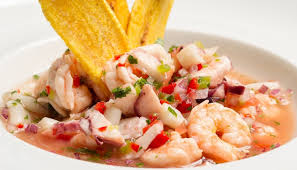

Regresar al inicio
Receta de Ceviche de camaron

Prepara a tu gusto.
Receta
Ingredientes
- 2 libras de camarones ya cocinados pelados y sin venas
- 2 cebollas coloradas pequeñas cortadas en rodajas súper finas
- 4 tomates cortadas en rodajas finas o picadas en cubitos
- 1 pimiento verde o rojo - picado en cubitos opcional
- 15-20 limones el jugo
- El jugo de una naranja
- ½ taza de salsa de tomate o tomate licuado/rallado para una versión mas fresca
- 1 manojo de cilantro o culantro picado finamente
- Sal y aceite al gusto
Preparación
- Frote las rodajas de cebolla con una cucharada de sal, luego enjuáguelas bien con agua fría.
- Mezcle todos los ingredientes en una fuente de buen tamaño y deje reposar en la refrigeradora por lo menos durante una a dos horas. Pruebe y ajuste la sal si es necesario.
- Sirva acompañado de ají o salsa picante, chifles, patacones o tostones, maíz tostado, o canguil (palomitas de maíz).
A servirse!!
